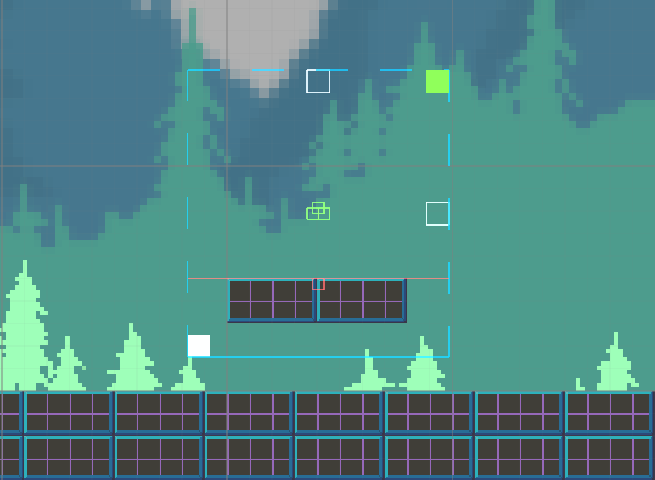

Rooms
Section your game level with rooms and let the target traverse them. When the target enters a room, it causes the camera to transition into the room. The room boundaries will then clamp the camera’s position.
Property |
|
|---|---|
Name |
The name of the room for identification purposes (optional). |
Boundary |
Each room has four boundaries, corresponding to each room wall (left, right, top, bottom). If enabled, the camera will be clamped by the corresponding boundary. If disabled, the camera will freely move through the boundary. The last button is to exit the room. If enabled, when the target exits the room, the camera will remain clamped to the room. Otherwise, the camera will exit the room. |
Transition |
Once the target enters a room, it will trigger a room transition causing the camera to automatically move inside the room. Specify the duration of the transition and if there should be a delay before starting the transition. |
Tween |
Transition tween type. |
Zoom |
Zoom to the desired level during the transition period. There are three types. Zoom: specify the zoom level. Match height: zoom to match the room height. Match width: zoom to match the room width. |
Restrict |
The target will not be able to physically move outside the room boundaries. Warning: the player must be at least one unit inside the room before this effect activates. |
Hold Target |
If enabled, during a transition the system will prevent the target from moving. |
Method |
|
|---|---|
RoomRestrict (string roomName) |
Enable a room’s restriction option. |
RoomUnrestrict (string roomName) |
Disable a room’s restriction option. |
RoomAddMultipleTarget (string roomName, Transform transform) |
Add a transform to the multiple target’s list. |
RoomRemoveMultipleTarget (string roomName, Transform transform) |
Remove a transform from the multiple target’s list. |
Note
While editing the room in the scene, pressing the upper right corner will resize the room to the size of the current orthographic camera. Make sure the main camera has the tag MainCamera.
The room is extremely versatile. It is possible to overlap two rooms adjacent to each other to facilitate transitions so the target doesn’t go off screen. You can also modify the trigger area of the room. The trigger area detects the target, which in turn triggers a room transition. By default, it’s the same size as the room. To modify the trigger area (the red line), drag the small buttons found in the middle of the room. You should only modify these values during editor time, and as a reminder, the trigger area is only there to detect the target, not to clamp the camera’s position.
This becomes useful for creating room platforms. In the image above, the room boundaries are all disabled except for the bottom one. And the bottom trigger has been moved up. The benefit is that the only way to enter this room is by jumping on top of the platform. If the target hits the bottom of the platform, it will not cause an unnecessary camera transition.
Multiple Targets
Each room comes with the ability to follow multiple targets including the main target. The camera will try to keep the specified targets in view by moving towards the average center and by zooming (if enabled). This feature is useful in case the main target is interacting with dynamic game elements that need to stay inside the camera view. This requires the Follow module to be enabled.
Property |
|
|---|---|
Early Detect |
When a target is near the camera edge, the camera will begin to zoom. Change the size of this detection area to detect targets sooner. A value between 1 and 5 should be a good starting point. |
Zoom To Fit |
If enabled, the camera will zoom to encapsulate moving targets and keep them inside the screen. The zoom level will not grow bigger than the room. |
Target Transforms |
Specify the targets and their positional offset for the system to keep track of. |